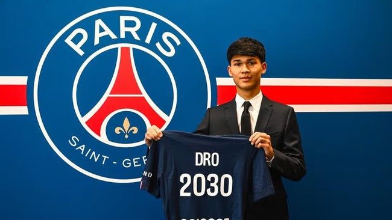
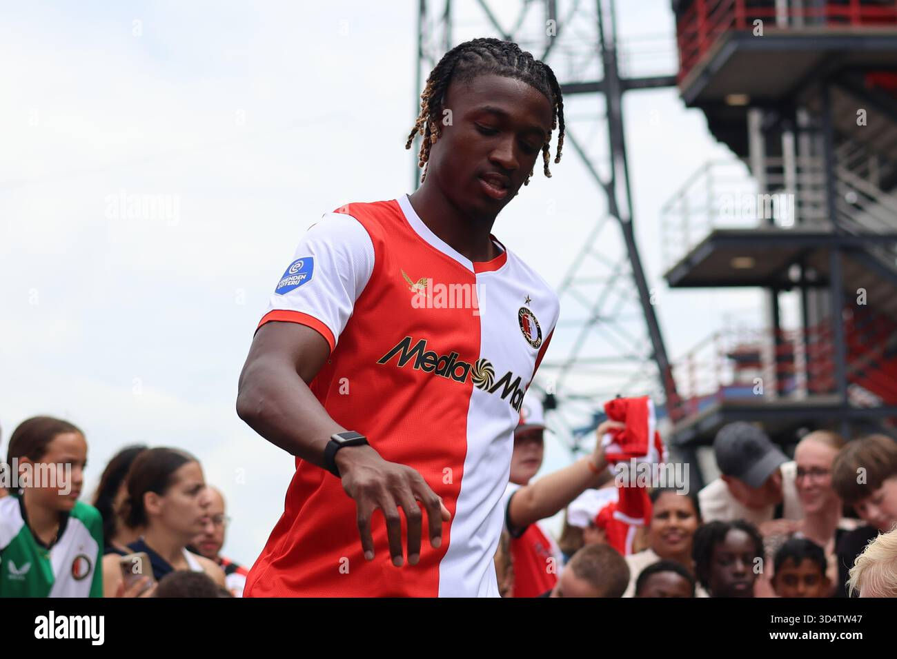
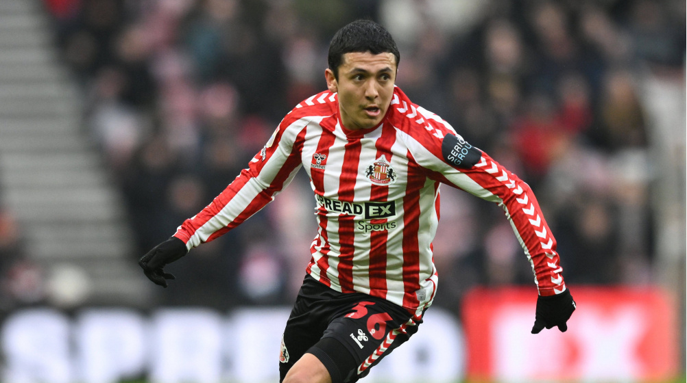
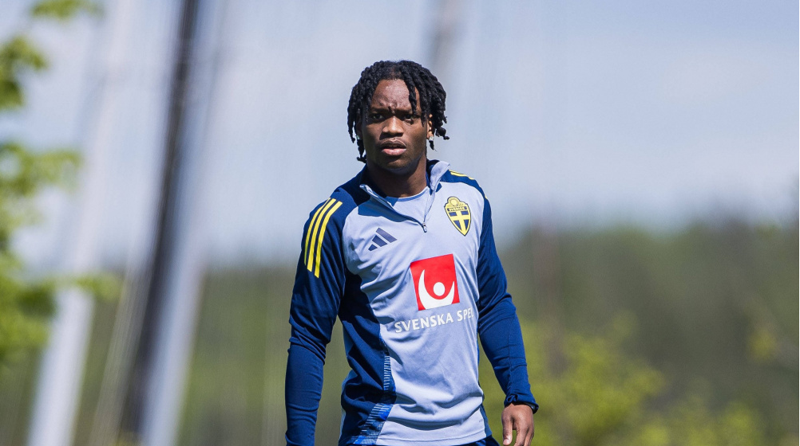

Transfer Pemain Terbaru!
Website oleh: Farhan dan Sakti

Transfer datang dari La Liga, tepatnya di tim Barcelona. Mereka melepas talenta muda mereka yaitu Dro Fernandez. Transfer ini berjalan dengan lancar dengan nilai transfer sebesar €8,2 Juta.
Transfer Pinjaman datang dari liga Brazil, Transfer ini berasal dari tim Botafogo.

Transfer Pinjaman datang dari liga Belanda, Transfer ini berasal dari tim Feyenoord.

Transfer datang dari Premier League, tepatnya di tim Sunderland. Mereka melepas pemain mereka yaitu Ian Poveda. Transfer ini berjalan tanpa adanya biaya transfer.

Transfer Pinjaman datang dari liga Prancis, Transfer ini berasal dari tim RC Lens.